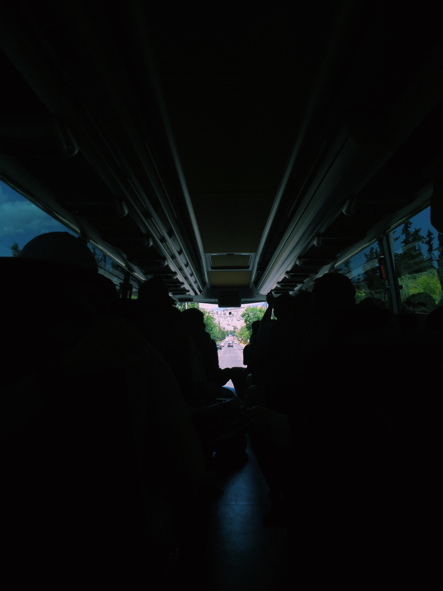

Interests
- Music and singing, specificially jazz (classically trained musician for 8 years)
- The perfect cup of tea
- Cooking and baking
- How memory works
- C.S. Lewis and other great American authors
- Photography
- Learning new verbal and programming languages! Languages I want to learn include: ASL, French, and Chinese. Programming languages I'd like to learn include: C++, Ruby, and JQuery.
My Photos
